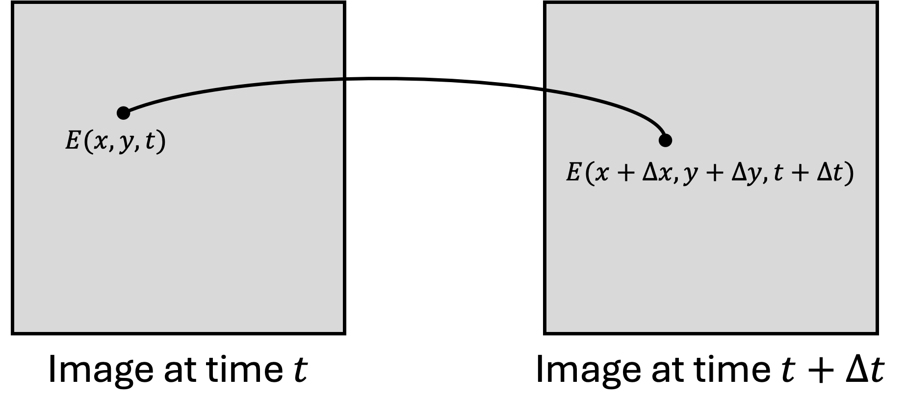
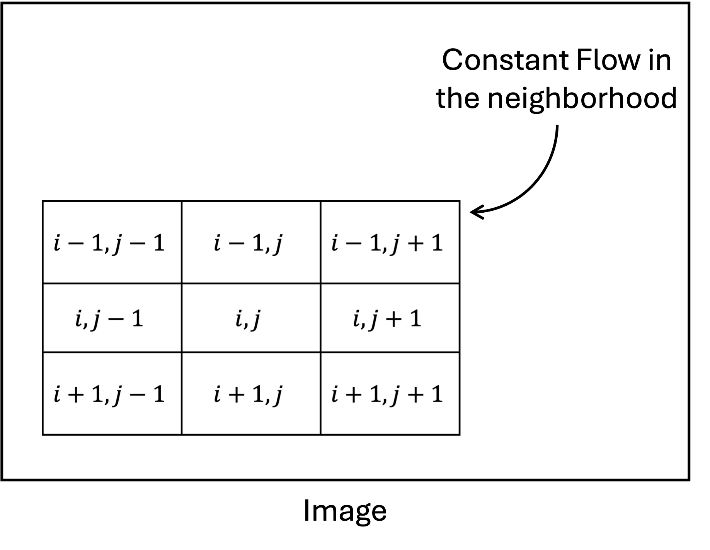

from scipy.ndimage import gaussian_filter
from scipy.signal import convolve2d
from tqdm.notebook import tqdm
import numpy as np
import imageio
import cv2 Lucas Kanade Optical Flow
Computer Vision
Optical Flow
Optical flow is the pattern of apparent motion of image objects between two consecutive frames caused by the movement of object or camera. It is vector field where each vector denotes the movement of points from first frame to second. Generally, optical flow is used to track the motion of objects in a video. Lets assume you have captured two frames with a small time difference \(\Delta t\). You wish to track the motion of a pixel located at \((x, y)\) in first frame. In the second frame, the pixel has moved to \((x + \Delta x, y + \Delta y)\). The vector \((\Delta x, \Delta y)\) is the optical flow vector.

\[I(x, y, t) = I(x + \Delta x, y + \Delta y, t + \Delta t)\]
The above equation is the basic assumption in optical flow. It assumes that intensity of an object does not change between two consecutive frames. This constraint is called brightness constancy constraint. This equation can be expanded using taylor series to get the optical flow equation.
\[I(x + \Delta x, y + \Delta y, t + \Delta t) \approx I(x, y, t) + \frac{\partial I}{\partial x} \Delta x + \frac{\partial I}{\partial y} \Delta y + \frac{\partial I}{\partial t} \Delta t = I(x, y, t)\]
\[\frac{\partial I}{\partial x} \Delta x + \frac{\partial I}{\partial y} \Delta y + \frac{\partial I}{\partial t} \Delta t = 0\]
\[\frac{\partial I}{\partial x} u + \frac{\partial I}{\partial y} v + \frac{\partial I}{\partial t} = 0\]
where \(u = \frac{\Delta x}{\Delta t}\) and \(v = \frac{\Delta y}{\Delta t}\) are the optical flow velocities in x and y directions respectively.
The above equation is called optical flow equation. It is a single equation with two unknowns \(u\) and \(v\). Hence, it is an ill-posed problem. To solve this problem, we need to make some more assumptions. One of the assumption to arrive here was brightness constancy assumption. It assumes that the intensity of an object does not change between two consecutive frames. The other assumption made was given by lucas and kanade. They assumed that the optical flow is same for all the pixels in a neighborhood. This assumption is called spatial coherence assumption.
Lucas Kanade Optical Flow
The Lucas-Kanade method is a widely used differential method for optical flow estimation developed by Bruce D. Lucas and Takeo Kanade. It assumes that the flow is essentially constant in a local neighbourhood of the pixel under consideration, and solves the basic optical flow equations for all the pixels in that neighbourhood by the least squares criterion.

\[\frac{\partial I}{\partial x} u + \frac{\partial I}{\partial y} v + \frac{\partial I}{\partial t} = 0\]
\[E_x = \frac{\partial I}{\partial x}, E_y = \frac{\partial I}{\partial y}, E_t = \frac{\partial I}{\partial t}\]
\[E_x u + E_y v + E_t = 0\]
\[\begin{bmatrix} E_x & E_y \end{bmatrix} \begin{bmatrix} u \\ v \end{bmatrix} = -E_t\]
\[ \begin{bmatrix} E_x(i-1,j-1) & E_y(i-1,j-1) \\ E_x(i-1,j) & E_y(i-1,j) \\ E_x(i-1,j+1) & E_y(i-1,j+1) \\ E_x(i,j-1) & E_y(i,j-1) \\ E_x(i,j) & E_y(i,j) \\ E_x(i,j+1) & E_y(i,j+1) \\ E_x(i+1,j-1) & E_y(i+1,j-1) \\ E_x(i+1,j) & E_y(i+1,j) \\ E_x(i+1,j+1) & E_y(i+1,j+1) \end{bmatrix} \begin{bmatrix} u \\ v \end{bmatrix} = \begin{bmatrix} -E_t(i-1,j-1) \\ -E_t(i-1,j) \\ -E_t(i-1,j+1) \\ -E_t(i,j-1) \\ -E_t(i,j) \\ -E_t(i,j+1) \\ -E_t(i+1,j-1) \\ -E_t(i+1,j) \\ -E_t(i+1,j+1) \end{bmatrix}\]
\[A_{(9,2)} x_{(2,1)} = b_{(9,1)}\]
\[A \overrightarrow{x} = \overrightarrow{b}\]
\[x = (A^T A)^{-1} A^T b\]
So for a chosen patch we can estimate the optical flow using above equation. This could also be written as
\[\begin{bmatrix} u \\ v \end{bmatrix} = \begin{bmatrix} \sum E_x E_x & \sum E_x E_y \\ \sum E_y E_x & \sum E_y E_y \end{bmatrix}^{-1} \begin{bmatrix} -\sum E_x E_t \\ -\sum E_y E_t \end{bmatrix}\]
This is the final equation used to estimate the optical flow using Lucas Kanade method. The above equation is solved for each patch in the image to get the optical flow vectors. Optical flow algorithm could be summarized as follows:
- Compute image gradients \(E_x\) and \(E_y\).
- Compute temporal gradient \(E_t\).
- Compute the matrix \(A\) and vector \(b\) for each patch.
- Solve the equation \(A \overrightarrow{x} = \overrightarrow{b}\) to get the optical flow vectors.
Lucas Kanade Implementation
UNDER CONSTRUCTION !!
def compute_derivatives(frame1, frame2):
"""
Compute spatial and temporal derivatives between two consecutive frames for optical flow estimation.
This function calculates the following derivatives:
- Ix: Spatial derivative in x direction (horizontal)
- Iy: Spatial derivative in y direction (vertical)
- It: Temporal derivative between frames
The spatial derivatives are computed using Sobel operators on the average of both frames.
The temporal derivative is computed as the difference between frames.
Args:
frame1 (numpy.ndarray): First frame (earlier time point)
frame2 (numpy.ndarray): Second frame (later time point)
Returns:
tuple: A tuple containing three numpy.ndarray:
- Ix: Spatial derivative in x direction
- Iy: Spatial derivative in y direction
- It: Temporal derivative
Note:
Both input frames should have the same dimensions and be in grayscale format.
"""
# Define Sobel operator for x direction (horizontal)
kernel_x = np.array([[1, 0, -1],
[2, 0, -2],
[1, 0, -1]]) /8.0
# Create y direction kernel by transposing x direction kernel
kernel_y = kernel_x.T
# Calculate average frame to reduce noise in derivative estimation
calc_frame = (frame1 + frame2)//2
# Compute spatial derivatives using convolution with Sobel operators
# 'same' mode maintains original dimensions, 'symm' handles boundaries by reflection
Ix = convolve2d(calc_frame, kernel_x, mode='same', boundary='symm')
Iy = convolve2d(calc_frame, kernel_y, mode='same', boundary='symm')
# Compute temporal derivative as difference between frames
# Convert to float to avoid integer overflow
It = frame2.astype(float) - frame1.astype(float)
return Ix, Iy, It
def lk_flow(frame1, frame2, window_size=16, tau=1e-2):
"""
Compute optical flow using the Lucas-Kanade method with improved robustness features.
This function implements the Lucas-Kanade algorithm for computing optical flow between
two consecutive frames. It includes several improvements for robustness:
- Gaussian smoothing for noise reduction
- Eigenvalue-based condition checking
- Flow magnitude thresholding
- Optional outlier removal (commented out in post-processing)
Args:
frame1 (numpy.ndarray): First frame (earlier time point)
frame2 (numpy.ndarray): Second frame (later time point)
window_size (int, optional): Size of the local window for flow computation.
Should be odd. Defaults to 16.
tau (float, optional): Threshold for eigenvalue condition checking.
Higher values mean stricter filtering. Defaults to 1e-2.
Returns:
tuple: Two numpy.ndarray containing:
- u: Horizontal component of the optical flow
- v: Vertical component of the optical flow
Note:
- Frames should be in grayscale format
- The function includes eigenvalue-based filtering to handle aperture problem
- Flow vectors with magnitude > 50 are filtered out
"""
# Apply Gaussian smoothing to reduce noise
# Higher sigma (2) for more aggressive smoothing
frame1 = gaussian_filter(frame1, sigma=2)
frame2 = gaussian_filter(frame2, sigma=2)
# Compute spatial and temporal derivatives
Ix, Iy, It = compute_derivatives(frame1, frame2)
# Initialize flow fields with zeros
u = np.zeros_like(frame1, dtype=float)
v = np.zeros_like(frame1, dtype=float)
# Pad images to handle border pixels
# Using edge padding to avoid border artifacts
pad = window_size // 2
Ix_pad = np.pad(Ix, ((pad, pad), (pad, pad)), mode='edge')
Iy_pad = np.pad(Iy, ((pad, pad), (pad, pad)), mode='edge')
It_pad = np.pad(It, ((pad, pad), (pad, pad)), mode='edge')
# Iterate through each pixel in the frame
for y in range(pad, frame1.shape[0] + pad):
for x in range(pad, frame1.shape[1] + pad):
# Extract local windows for derivatives
# Flatten to create system of equations
Ix_win = Ix_pad[y-pad:y+pad+1, x-pad:x+pad+1].flatten()
Iy_win = Iy_pad[y-pad:y+pad+1, x-pad:x+pad+1].flatten()
It_win = It_pad[y-pad:y+pad+1, x-pad:x+pad+1].flatten()
# Construct system of equations Av = b
# A: spatial gradients, b: negative temporal gradient
A = np.vstack((Ix_win, Iy_win)).T
b = -It_win
# Compute ATA for solving least squares
ATA = np.dot(A.T, A)
# Check eigenvalues for aperture problem
eigenvalues = np.linalg.eigvals(ATA)
# Skip if eigenvalues indicate ill-conditioned system
# Two conditions: minimum eigenvalue threshold and condition number check
if np.min(eigenvalues) < tau or np.max(eigenvalues) / (np.min(eigenvalues) + 1e-10) > 100:
continue
# Solve the system of equations
try:
flow = np.linalg.solve(ATA, np.dot(A.T, b))
# Apply flow magnitude threshold to filter out large motions
if np.sqrt(flow[0]**2 + flow[1]**2) < 50: # Threshold can be adjusted
u[y-pad, x-pad] = flow[0]
v[y-pad, x-pad] = flow[1]
except np.linalg.LinAlgError:
continue
return u, vfile = 0
gif_path = "../../images/blogs/Lucas-Kanade/"+str(file)+".gif"
gif_frames = np.array(imageio.mimread(gif_path)) # Read GIF file
writer = cv2.VideoWriter("../../images/blogs/Lucas-Kanade/Flow"+str(file)+".AVI",
cv2.VideoWriter_fourcc(*'XVID'), 10, (2*gif_frames[0].shape[1], 2*gif_frames[0].shape[0]))
for i in range(1, len(gif_frames)):
# Convert frames to grayscale
frame1_gray = cv2.cvtColor(gif_frames[i-1], cv2.COLOR_RGB2GRAY)
frame2_gray = cv2.cvtColor(gif_frames[i], cv2.COLOR_RGB2GRAY)
# Compute optical flow using Lucas-Kanade method.
u, v = lk_flow(frame1_gray, frame2_gray, window_size=16, tau=1e-2)
u,v = u*2, v*2
# Display optical flow vectors on frame.
flow_img = gif_frames[i-1].copy()
flow_img = cv2.cvtColor(flow_img, cv2.COLOR_RGB2BGR)
step = 8
for y in range(0, flow_img.shape[0], step):
for x in range(0, flow_img.shape[1], step):
cv2.arrowedLine(flow_img, (x, y), (int(x+u[y, x]), int(y+v[y, x])), (0, 0, 255), 1)
flow_img = cv2.resize(flow_img, (2*flow_img.shape[1], 2*flow_img.shape[0]))
# Display frame with optical flow vectors.
cv2.imshow('Optical Flow', flow_img)
# Write frame to output video
writer.write(flow_img)
# Press 'q' to quit
if cv2.waitKey(1) & 0xFF == ord('q'):
cv2.destroyAllWindows()
cv2.waitKey(1)
cv2.destroyAllWindows()
cv2.waitKey(1)